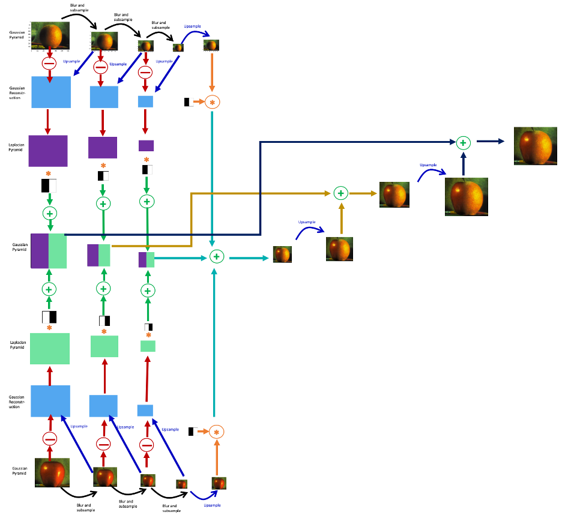

An image can be seen as a function: I: \mathcal{D} \rightarrow \mathcal{C}
Where \mathcal{D} is the domain (\mathbb{R}^2 for a continuous image, a grid of pixels for a difital picture). And \mathcal{C} is a color-space.
H_I(i) = |\{x, I(x)=i\}|
Cumulative
C_I(i) = |\{x, I(x)<i\}|
Histogram equalization: better to tune brightness and contrasts. Goal: find a mapping f(I) such as its histogram is equalized. This is easy by remarking that C_{f \circ I} = C_I \circ f^{-1}
Adaptative histogram equalization:
Integral image:
s(i,j) = \sum_{k=0}^i \sum_{k=0}^j I(k,l)
Summed area table: S(i_0 \dots i_1, j_0 \dots j_1) = \sum_{i=i_0}^{i_1} \sum_{j=j_0}^{j_1} s(i_1, j_1) - s(i_1, j_0-1) - s(i_0-1,j_1) + s(i_0-1, j_0-1)
| transform | formula | effect |
|---|---|---|
| affine | a I(x) + b | contrast and brightness (coarse) |
| linar blend | \alpha I_1(x) + (1-\alpha)I_2(x) | To perform transitions |
| gamma correction | I(x)^{\frac{1}{\gamma}} | To invert the gamma mapping applied by the sensor (\gamma \simeq 2.2 for a digital camera) |
Composition equation (B is the background, F the foreground and \alpha the relative amount of opacity): C = (1-\alpha)B + \alpha F
To perform linear filtering, let introduce convolution and correlation operators between an image I and a kernel K.
Both of them are linear shift inavariant.
Correlation operator, written O = I \otimes K, is defined by
with (discrete case): O(i,j) = \sum_{k,l} I(i+k,j+l)K(k,l)
Convolution operator, written O = I*K, is defined by
with (discrete case): O(i,j) = \sum_{k,l} I(k,l) K(i-k, j-l) = \sum_{k,l} I(i-k,j-l)K(k,l)
To apply them on finite images, one need to introduce padding
| name | expression | effect |
|---|---|---|
| box | K(i,j) = \frac{1}{k} | bluring |
| Bartlett (tent) | $K(i,j) = |
A convolution kernel K is separable in a horizontal kernel h and a vertical kernel v (reduce the number of operation from k^2 per pixel to 2k per pixel):
K = vh^T
To see if a kernel is separable, compute SVD and see if all the singular values but one are non 0.
Here: !(https://dpt-info.u-strasbg.fr/~cronse/TIDOC/index.html)
On E=\mathbb{Z}^2 (but works for \mathbb{R}^d), let B \subset E be a “structuring element”. For x \in E let note: B_x = \{b+x | b \in B\}
Then, one can define dilatation operation:
And erosion:
Opening:
Closing:
Morphological (Beucher) gradient:
Morphological laplacian:
For a binary image B
D(i,j) = \min_{k,l | B(k,l)=0} d(i-k,j-l)
with d the Manhatan or the euclidian distance.
Let suppose that we have to debulr an image I, which has been formed by bluring an initial image, convolved by a filter k:
I = S*K + N
In Fourier domain:
\hat{I} = \hat{S} \hat{K} + \hat{N}
We have:
p(\hat{S} | \hat{I}) = \frac{p(\hat{S} | \hat{I}) p(\hat{S})}{p(\hat{I})}
Let suppose that N is a white gaussian noise with 0 mean and \sigma_n variance, and that the prior distribution of S has the form:
p(\hat{S}) = e^{-\frac{\hat{S}}{2 \sigma_s^2}}
Then, the log likelihood is:
\mathcal{L}(\hat{S}) = \frac{\hat{S}}{2 \sigma_s^2} + \frac{(\hat{S} \hat{K} - \hat{I})^2}{2 \sigma_n^2} + \log(p(\hat{I}))
And it is maximized by:
S_{opt} = \frac{\hat{K}^*}{K^2 + \frac{\sigma_n^2}{\sigma_s^2}} \hat{I} = \hat{W} \hat{I}
Where \hat{W} is the Weiner filter. In practice \frac{\sigma_n^2}{\sigma_s^2} is unknown and is considered as an hyperparameter to tune.
Note that the gaussian assumptions are not required, and it can be shown that Weiner filter is in fact the one which minimizes the least squares in general.
To interpolate an image to a higher resolution:
G(i,j) = \sum_{k,l} I(k,l) K(i-rk, j-rl)
Where K is a spline function. The most used is the based on the cubic kernel (often a=-1 or a=-0.5):
K(x) = \left\{ \begin{array}{ll} 1-(a+3)x^2+(a+2)|x|^3 & \text{if } |x|<1 \\ a(|x|-1)(|x|-2)^2 & \text{if } 1 \leq |x| < 2 \\ 0 & \text{else} \end{array} \right.
To interpolate an image to a smaller resolution:
G(i,j) = \sum_{k,l} I(k,l) K(ri-k, rj-l)
laplacian pyramid construction principle, with reconstruction:
Applications:
